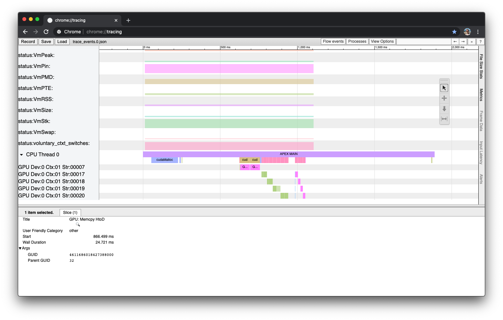

Usage¶
Supported Runtime Systems¶
HPX (Louisiana State University)¶
HPX (High Performance ParalleX) is the original implementation of the ParalleX model. Developed and maintained by the Ste||ar Group at Louisiana State University, HPX is implemented in C++. For more information, see http://stellar-group.org/projects/hpx/. For a tutorial on HPX with APEX (presented at SC'15, Austin TX) see https://github.com/khuck/SC15_APEX_tutorial (somewhat outdated).
APEX is configured and built as part of HPX. In fact, you don't even need to donwload it separately - it will be automatically checked out from Github as part of the HPX Cmake configuration. However, you do need to pass the correct Cmake options to the HPX configuration step.
Configuring HPX with APEX¶
See Intallation with HPX.
Running HPX with APEX¶
See APEX Quickstart.
OpenMP¶
The OpenMP API supports multi-platform shared-memory parallel programming in C/C++ and Fortran. The OpenMP API defines a portable, scalable model with a simple and flexible interface for developing parallel applications on platforms from the desktop to the supercomputer. For more information, see http://openmp.org/.
Configuring APEX for OpenMP OMPT support¶
The CMake process will automatically detect whether your compiler has OpenMP support. If you configure APEX with -DUSE_OMPT=TRUE and have a compiler with full OpenMP 5.0 OMPT support, APEX will detect the support. If your compiler is GCC, Intel or Clang and does not have native OMPT support, APEX can build and use the open source LLVM OpenMP runtime as a drop-in replacement for the compiler's native runtime library.
APEX uses Binutils to resolve the OpenMP outlined regions from instruction addresses to human-readable names, so also configure APEX with -DUSE_BFD=TRUE (see Other CMake Settings). The following example was configured and run with Intel 20 compilers. The CMake configuration for this example was:
cmake -DCMAKE_C_COMPILER=`which icc` -DCMAKE_CXX_COMPILER=`which icpc` -DCMAKE_BUILD_TYPE=Release -DCMAKE_INSTALL_PREFIX=../install -DBUILD_TESTS=TRUE -DUSE_BFD=TRUE -DBFD_ROOT=/usr/local/packages/binutils/2.34 -DUSE_OMPT=TRUE ..
Running OpenMP applications with APEX¶
Using the apex_exec wrapper script, execute the OpenMP program as normal:
[khuck@delphi xpress-apex]$ ./install/bin/apex_exec --apex:screen --apex:taskgraph build/src/unit_tests/C++/apex_openmp_cpp
Program to run : build/src/unit_tests/C++/apex_openmp_cpp
Initializing...
No Sharing...
Result: 2690568.772590
Elapsed time: 0.0398378 seconds
Cores detected: 72
Worker Threads observed: 72
Available CPU time: 2.86832 seconds
Counter : #samples | minimum | mean | maximum | stddev
------------------------------------------------------------------------------------------------
Iterations: OpenMP Work Loop: no_shari... : 71 1.05e+06 1.05e+06 1.05e+06 0.000
Iterations: OpenMP Work Loop: my_init(... : 144 1.05e+06 1.05e+06 1.05e+06 0.000
OpenMP Initial Thread : 1 1.000 1.000 1.000 0.000
OpenMP Worker Thread : 71 1.000 1.000 1.000 0.000
Single: OpenMP Work Single Executor: L... : 1 1.000 1.000 1.000 0.000
Single: OpenMP Work Single Executor: L... : 2 1.000 1.000 1.000 0.000
Single: OpenMP Work Single Other: L__Z... : 71 1.000 1.000 1.000 0.000
Single: OpenMP Work Single Other: L__Z... : 142 1.000 1.000 1.000 0.000
status:Threads : 1 3.000 3.000 3.000 0.000
status:VmData : 1 1.07e+05 1.07e+05 1.07e+05 0.000
status:VmExe : 1 20.000 20.000 20.000 0.000
status:VmHWM : 1 9356.000 9356.000 9356.000 0.000
status:VmLck : 1 0.000 0.000 0.000 0.000
status:VmLib : 1 4.39e+04 4.39e+04 4.39e+04 0.000
status:VmPTE : 1 128.000 128.000 128.000 0.000
status:VmPeak : 1 2.49e+05 2.49e+05 2.49e+05 0.000
status:VmPin : 1 0.000 0.000 0.000 0.000
status:VmRSS : 1 9356.000 9356.000 9356.000 0.000
status:VmSize : 1 1.84e+05 1.84e+05 1.84e+05 0.000
status:VmStk : 1 136.000 136.000 136.000 0.000
status:VmSwap : 1 0.000 0.000 0.000 0.000
status:nonvoluntary_ctxt_switches : 1 43.000 43.000 43.000 0.000
status:voluntary_ctxt_switches : 1 46.000 46.000 46.000 0.000
------------------------------------------------------------------------------------------------
Timer : #calls | mean | total | % total
------------------------------------------------------------------------------------------------
APEX MAIN : 1 0.040 0.040 100.000
OpenMP Parallel Region: no_sharing(double*, doubl... : 1 0.006 0.006 0.211
OpenMP Parallel Region: my_init(double*) [{/home/... : 2 0.014 0.028 0.961
OpenMP Work Loop: no_sharing(double*, double*) [{... : 72 0.003 0.195 6.806
OpenMP Work Loop: my_init(double*) [{/home/users/... : 143 0.001 0.161 5.622
OpenMP Work Single Executor: L__Z10no_sharingPdS_... : 1 0.001 0.001 0.028
OpenMP Work Single Executor: L__Z7my_initPd_39__p... : 2 0.000 0.001 0.018
OpenMP Work Single Other: L__Z10no_sharingPdS__20... : 71 0.000 0.029 1.027
OpenMP Work Single Other: L__Z7my_initPd_39__par_... : 141 0.001 0.100 3.472
------------------------------------------------------------------------------------------------
Total timers : 433
If GraphViz is installed on your system, the dot program will generate a taskgraph image based on the taskgraph.0.dot file that was generated by APEX:

OpenACC¶
Configuring APEX for OpenACC support¶
Nothing special needs to be done to enable OpenACC support. If your compiler supports OpenACC (PGI, GCC 10+), then CMake will detect it and enable OpenACC support in APEX.
In this example, APEX was configured with GCC 10.0.0:
cmake -DCMAKE_C_COMPILER=`which gcc` -DCMAKE_CXX_COMPILER=`which g++` -DCMAKE_BUILD_TYPE=Release -DCMAKE_INSTALL_PREFIX=../install -DBUILD_TESTS=TRUE -DUSE_BFD=FALSE -DBFD_ROOT=/usr/local/packages/binutils/2.34 ..
Running OpenACC programs with APEX¶
Enabling OpenACC support requires setting the ACC_PROFLIB environment variable with the path to libapex.so, or by using the apex_exec script with the --apex:openacc flag:
[khuck@gorgon xpress-apex]$ ./install/bin/apex_exec --apex:screen --apex:taskgraph --apex:openacc ./build/src/unit_tests/C/apex_openacc
Program to run : ./build/src/unit_tests/C/apex_openacc
Jacobi relaxation Calculation: 128 x 128 mesh
Device API: none Device type: default Device vendor: -1
Device API: CUDA Device type: nvidia Device vendor: -1
0, 0.250000
Elapsed time: 0.451705 seconds
Cores detected: 160
Worker Threads observed: 1
Available CPU time: 0.451705 seconds
Counter : #samples | minimum | mean | maximum | stddev
------------------------------------------------------------------------------------------------
OpenACC Gangs : 200 1.000 2560.500 5120.000 2559.500
OpenACC Vector Lanes : 200 32.000 32.000 32.000 0.000
OpenACC Workers : 200 1.000 1.000 1.000 0.000
OpenACC device alloc (implicit) parall... : 301 15.000 889.206 2.62e+05 1.51e+04
OpenACC device free (implicit) paralle... : 301 0.000 0.000 0.000 0.000
OpenACC enqueue data transfer (HtoD) (... : 200 16.000 20.000 24.000 4.000
status:Threads : 1 3.000 3.000 3.000 0.000
status:VmData : 1 1.81e+04 1.81e+04 1.81e+04 0.000
status:VmExe : 1 64.000 64.000 64.000 0.000
status:VmHWM : 1 4416.000 4416.000 4416.000 0.000
status:VmLck : 1 0.000 0.000 0.000 0.000
status:VmLib : 1 8640.000 8640.000 8640.000 0.000
status:VmPMD : 1 16.000 16.000 16.000 0.000
status:VmPTE : 1 3.000 3.000 3.000 0.000
status:VmPeak : 1 1.59e+05 1.59e+05 1.59e+05 0.000
status:VmPin : 1 0.000 0.000 0.000 0.000
status:VmRSS : 1 4416.000 4416.000 4416.000 0.000
status:VmSize : 1 9.34e+04 9.34e+04 9.34e+04 0.000
status:VmStk : 1 192.000 192.000 192.000 0.000
status:VmSwap : 1 0.000 0.000 0.000 0.000
status:nonvoluntary_ctxt_switches : 1 0.000 0.000 0.000 0.000
status:voluntary_ctxt_switches : 1 46.000 46.000 46.000 0.000
------------------------------------------------------------------------------------------------
Timer : #calls | mean | total | % total
------------------------------------------------------------------------------------------------
APEX MAIN : 1 0.452 0.452 100.000
OpenACC compute construct parallel : 200 0.001 0.215 47.492
OpenACC device init (implicit) parallel : 1 0.081 0.081 17.965
OpenACC enqueue data transfer (HtoD) (implicit) p... : 200 0.000 0.002 0.523
OpenACC enqueue launch: main$_omp_fn$0 (implicit)... : 100 0.000 0.001 0.288
OpenACC enqueue launch: main$_omp_fn$1 (implicit)... : 100 0.000 0.001 0.267
OpenACC enter data (implicit) parallel : 200 0.000 0.002 0.491
OpenACC enter data data : 1 0.000 0.000 0.078
OpenACC exit data (implicit) parallel : 200 0.000 0.003 0.733
OpenACC exit data data : 1 0.000 0.000 0.043
APEX Idle : 0.145 32.120
------------------------------------------------------------------------------------------------
Total timers : 1003

CUDA¶
Configuring APEX for CUDA support¶
Enabling CUDA support in APEX requires the -DAPEX_WITH_CUDA=TRUE flag and the -DCUDA_ROOT=/path/to/cuda CMake variables at configuration time. CMake will look for the CUPTI and NVML libraries in the installation, and if found the support will be enabled.
cmake -DCMAKE_C_COMPILER=`which gcc` -DCMAKE_CXX_COMPILER=`which g++` -DCMAKE_BUILD_TYPE=Release -DCMAKE_INSTALL_PREFIX=../install -DBUILD_TESTS=TRUE -DUSE_BFD=TRUE -DAPEX_WITH_CUDA=TRUE -DCUDA_ROOT=/usr/local/packages/cuda/10.2 -DBFD_ROOT=/usr/local/packages/binutils/2.34 ..
Running CUDA programs with APEX¶
Enabling CUDA support only requires using the apex_exec wrapper script.
[khuck@gorgon xpress-apex]$ ./install/bin/apex_exec --apex:screen --apex:taskgraph ./build/src/unit_tests/CUDA/apex_cuda_cu
Program to run : ./build/src/unit_tests/CUDA/apex_cuda_cu
On device: name=hello, value=10
On device: name=dello, value=11
On device: name=dello, value=12
On device: name=dello, value=13
On host: name=dello, value=14
Elapsed time: 0.410402 seconds
Cores detected: 160
Worker Threads observed: 1
Available CPU time: 0.410402 seconds
Counter : #samples | minimum | mean | maximum | stddev
------------------------------------------------------------------------------------------------
Device 0 GPU Clock Memory (MHz) : 1 877.000 877.000 877.000 0.000
Device 0 GPU Clock SM (MHz) : 1 135.000 135.000 135.000 0.000
Device 0 GPU Memory Free (MB) : 1 3.41e+04 3.41e+04 3.41e+04 0.000
Device 0 GPU Memory Used (MB) : 1 0.197 0.197 0.197 0.000
Device 0 GPU Memory Utilization % : 1 0.000 0.000 0.000 0.000
Device 0 GPU NvLink Link Count : 1 6.000 6.000 6.000 0.000
Device 0 GPU NvLink Speed MB/s : 1 2.58e+04 2.58e+04 2.58e+04 0.000
Device 0 GPU NvLink Utilization C0 : 1 0.000 0.000 0.000 0.000
Device 0 GPU NvLink Utilization C1 : 1 0.000 0.000 0.000 0.000
Device 0 GPU Power (W) : 1 38.912 38.912 38.912 0.000
Device 0 GPU Temperature (C) : 1 33.000 33.000 33.000 0.000
Device 0 GPU Utilization % : 1 0.000 0.000 0.000 0.000
Device 0 PCIe RX Throughput (MB/s) : 1 1.000 1.000 1.000 0.000
Device 0 PCIe TX Throughput (MB/s) : 1 3.000 3.000 3.000 0.000
GPU: Bytes Allocated : 2 6.000 11.000 16.000 5.000
status:Threads : 1 4.000 4.000 4.000 0.000
status:VmData : 1 5.72e+04 5.72e+04 5.72e+04 0.000
status:VmExe : 1 64.000 64.000 64.000 0.000
status:VmHWM : 1 1.77e+04 1.77e+04 1.77e+04 0.000
status:VmLck : 1 0.000 0.000 0.000 0.000
status:VmLib : 1 6.92e+04 6.92e+04 6.92e+04 0.000
status:VmPMD : 1 12.000 12.000 12.000 0.000
status:VmPTE : 1 7.000 7.000 7.000 0.000
status:VmPeak : 1 2.58e+05 2.58e+05 2.58e+05 0.000
status:VmPin : 1 0.000 0.000 0.000 0.000
status:VmRSS : 1 1.77e+04 1.77e+04 1.77e+04 0.000
status:VmSize : 1 1.93e+05 1.93e+05 1.93e+05 0.000
status:VmStk : 1 192.000 192.000 192.000 0.000
status:VmSwap : 1 0.000 0.000 0.000 0.000
status:nonvoluntary_ctxt_switches : 1 0.000 0.000 0.000 0.000
status:voluntary_ctxt_switches : 1 102.000 102.000 102.000 0.000
------------------------------------------------------------------------------------------------
Timer : #calls | mean | total | % total
------------------------------------------------------------------------------------------------
APEX MAIN : 1 0.410 0.410 100.000
GPU: Unified Memory copy DTOH : 1 0.000 0.000 0.001
GPU: Unified Memory copy HTOD : 1 0.000 0.000 0.001
GPU: Kernel(DataElement*) : 4 0.000 0.000 0.084
cudaDeviceSynchronize : 4 0.000 0.000 0.092
cudaFree : 2 0.000 0.000 0.045
cudaLaunchKernel : 4 0.000 0.000 0.007
cudaMallocManaged : 2 0.104 0.208 50.601
launch [/home/users/khuck/src/xpress-apex/src/uni... : 4 0.001 0.003 0.798
APEX Idle : 0.199 48.371
------------------------------------------------------------------------------------------------
Total timers : 22
To get additional information you can also enable the --apex:cuda_driver flag to see CUDA driver API calls, or enable the --apex:cuda_counters flag to enable CUDA counters.
[khuck@gorgon xpress-apex]$ ./install/bin/apex_exec --apex:screen --apex:taskgraph --apex:cuda_counters --apex:cuda_driver ./build/src/unit_tests/CUDA/apex_cuda_cu
Program to run : ./build/src/unit_tests/CUDA/apex_cuda_cu
On device: name=hello, value=10
On device: name=dello, value=11
On device: name=dello, value=12
On device: name=dello, value=13
On host: name=dello, value=14
Elapsed time: 0.309145 seconds
Cores detected: 160
Worker Threads observed: 1
Available CPU time: 0.309145 seconds
Counter : #samples | minimum | mean | maximum | stddev
------------------------------------------------------------------------------------------------
Device 0 GPU Clock Memory (MHz) : 1 877.000 877.000 877.000 0.000
Device 0 GPU Clock SM (MHz) : 1 135.000 135.000 135.000 0.000
Device 0 GPU Memory Free (MB) : 1 3.41e+04 3.41e+04 3.41e+04 0.000
Device 0 GPU Memory Used (MB) : 1 0.197 0.197 0.197 0.000
Device 0 GPU Memory Utilization % : 1 0.000 0.000 0.000 0.000
Device 0 GPU NvLink Link Count : 1 6.000 6.000 6.000 0.000
Device 0 GPU NvLink Speed MB/s : 1 2.58e+04 2.58e+04 2.58e+04 0.000
Device 0 GPU NvLink Utilization C0 : 1 0.000 0.000 0.000 0.000
Device 0 GPU NvLink Utilization C1 : 1 0.000 0.000 0.000 0.000
Device 0 GPU Power (W) : 1 38.912 38.912 38.912 0.000
Device 0 GPU Temperature (C) : 1 33.000 33.000 33.000 0.000
Device 0 GPU Utilization % : 1 0.000 0.000 0.000 0.000
Device 0 PCIe RX Throughput (MB/s) : 1 2.000 2.000 2.000 0.000
Device 0 PCIe TX Throughput (MB/s) : 1 3.000 3.000 3.000 0.000
GPU: Bandwith (GB/s) <- Unified Memory... : 1 18.618 18.618 18.618 0.000
GPU: Bandwith (GB/s) <- Unified Memory... : 1 11.770 11.770 11.770 0.000
GPU: Bytes <- Unified Memory copy DTOH : 1 6.55e+04 6.55e+04 6.55e+04 0.000
GPU: Bytes <- Unified Memory copy HTOD : 1 6.55e+04 6.55e+04 6.55e+04 0.000
GPU: Bytes Allocated : 3 0.000 7.333 16.000 6.600
GPU: Dynamic Shared Memory (B) : 4 0.000 0.000 0.000 0.000
GPU: Local Memory Per Thread (B) : 4 0.000 0.000 0.000 0.000
GPU: Local Memory Total (B) : 4 1.36e+08 1.36e+08 1.36e+08 0.000
GPU: Registers Per Thread : 4 32.000 32.000 32.000 0.000
GPU: Shared Memory Size (B) : 4 0.000 0.000 0.000 0.000
GPU: Static Shared Memory (B) : 4 0.000 0.000 0.000 0.000
Unified Memory CPU Page Fault Count : 2 1.000 1.000 1.000 0.000
Unified Memory GPU Page Fault Groups : 1 1.000 1.000 1.000 0.000
status:Threads : 1 4.000 4.000 4.000 0.000
status:VmData : 1 5.69e+04 5.69e+04 5.69e+04 0.000
status:VmExe : 1 64.000 64.000 64.000 0.000
status:VmHWM : 1 1.70e+04 1.70e+04 1.70e+04 0.000
status:VmLck : 1 0.000 0.000 0.000 0.000
status:VmLib : 1 6.92e+04 6.92e+04 6.92e+04 0.000
status:VmPMD : 1 16.000 16.000 16.000 0.000
status:VmPTE : 1 7.000 7.000 7.000 0.000
status:VmPeak : 1 2.58e+05 2.58e+05 2.58e+05 0.000
status:VmPin : 1 0.000 0.000 0.000 0.000
status:VmRSS : 1 1.70e+04 1.70e+04 1.70e+04 0.000
status:VmSize : 1 1.93e+05 1.93e+05 1.93e+05 0.000
status:VmStk : 1 192.000 192.000 192.000 0.000
status:VmSwap : 1 0.000 0.000 0.000 0.000
status:nonvoluntary_ctxt_switches : 1 0.000 0.000 0.000 0.000
status:voluntary_ctxt_switches : 1 100.000 100.000 100.000 0.000
------------------------------------------------------------------------------------------------
Timer : #calls | mean | total | % total
------------------------------------------------------------------------------------------------
APEX MAIN : 1 0.309 0.309 100.000
GPU: Unified Memory copy DTOH : 1 0.000 0.000 0.001
GPU: Unified Memory copy HTOD : 1 0.000 0.000 0.002
GPU: Kernel(DataElement*) : 4 0.000 0.001 0.353
cuCtxGetCurrent : 2 0.000 0.000 0.002
cuCtxGetDevice : 1 0.000 0.000 0.001
cuCtxSetCurrent : 1 0.000 0.000 0.001
cuCtxSynchronize : 4 0.000 0.001 0.349
cuDeviceGet : 4 0.000 0.000 0.002
cuDeviceGetAttribute : 376 0.000 0.002 0.754
cuDeviceGetCount : 1 0.000 0.000 0.008
cuDeviceGetName : 4 0.000 0.000 0.046
cuDeviceGetUuid : 4 0.000 0.000 0.002
cuDevicePrimaryCtxRetain : 1 0.111 0.111 35.773
cuDeviceTotalMem_v2 : 4 0.002 0.006 2.022
cuLaunchKernel : 4 0.000 0.000 0.005
cuMemAllocManaged : 2 0.012 0.024 7.743
cuMemFree_v2 : 2 0.000 0.000 0.051
cuModuleGetFunction : 1 0.000 0.000 0.005
cudaDeviceSynchronize : 4 0.000 0.001 0.361
cudaFree : 2 0.000 0.000 0.057
cudaLaunchKernel : 4 0.000 0.000 0.051
cudaMallocManaged : 2 0.060 0.120 38.773
launch [/home/users/khuck/src/xpress-apex/src/uni... : 4 0.000 0.001 0.442
APEX Idle : 0.041 13.195
------------------------------------------------------------------------------------------------
Total timers : 433

Kokkos¶
Configuring APEX for Kokkos support¶
Like OpenACC, nothing special needs to be done to enable Kokkos support.
Running Kokkos programs with APEX¶
Enabling Kokkos support requires setting the KOKKOS_PROFILE_LIBRARY environment variable with the path to libapex.so, or by using the apex_exec script with the --apex:kokkos flag.
Configuring APEX for RAJA support¶
Like OpenACC, nothing special needs to be done to enable RAJA support.
Running RAJA programs with APEX¶
Enabling RAJA support requires setting the RAJA_PLUGINS environment variable with the path to libapex.so, or by using the apex_exec script with the --apex:raja flag.
C++ Threads¶
APEX suports C++ threads on Linux, with the assumption that they are implemented on top of POSIX threads.
Configuring APEX for C++ Thread support¶
Nothing special needs to be done to enable C++ thread support.
Running C++ Thread programs with APEX¶
Enabling C++ Thread support requires using the apex_exec script with the --apex:pthread flag. That will enable the preloading of a wrapper library to intercept pthread_create() calls. A sample program with C++ threads is in the APEX unit tests:
khuck@Kevins-MacBook-Air build % ../install/bin/apex_exec --apex:pthread src/unit_tests/C++/apex_fibonacci_std_async_cpp
Program to run : src/unit_tests/C++/apex_fibonacci_std_async_cpp
usage: apex_fibonacci_std_async_cpp <integer value>
Using default value of 10
fib of 10 is 55 (valid value: 55)
Elapsed time: 0.005359 seconds
Cores detected: 8
Worker Threads observed: 178
Available CPU time: 0.042872 seconds
Timer : #calls | mean | total | % total
------------------------------------------------------------------------------------------------
fib(int, std::__1::shared_ptr<apex::task_wrapper>) : 177 0.001 0.171 --n/a--
APEX MAIN : 1 0.005 0.005 100.000
------------------------------------------------------------------------------------------------
Total timers : 177
Note that APEX detected 178 total OS threads. That is because some C++ thread implementations (GCC, Clang, others) implement every std::async() call as a new OS thread, resulting in a pthread_create() call.
Other Runtime Systems¶
We are currently evaluating support for TBB, OpenCL, SYCL/DPC++/OneAPI, among others.
Performance Measurement Features¶
For all the following examples, we will use a simple CUDA program that is in the APEX unit tests.
Profiling¶
Profiling with APEX is the usual and most simple mode of operation. In order to profile an application and get a report at the end of execution, enable screen output (see Environment Variables for details) and run an application linked with the APEX library or with the apex_exec --apex:screen flag (enabled by default). The output should look like examples shown previously.
[khuck@cyclops xpress-apex]$ export APEX_SCREEN_OUTPUT=1
[khuck@cyclops xpress-apex]$ ./build/src/unit_tests/CUDA/apex_cuda_cu
Found 4 total devices
On device: name=hello, value=10
On device: name=dello, value=11
On device: name=dello, value=12
On device: name=dello, value=13
On host: name=dello, value=14
Elapsed time: 0.46147 seconds
Cores detected: 160
Worker Threads observed: 1
Available CPU time: 0.46147 seconds
Counter : #samples | minimum | mean | maximum | stddev
------------------------------------------------------------------------------------------------
1 Minute Load average : 1 13.320 13.320 13.320 0.000
Device 0 GPU Clock Memory (MHz) : 1 877.000 877.000 877.000 0.000
Device 0 GPU Clock SM (MHz) : 1 1530.000 1530.000 1530.000 0.000
Device 0 GPU Memory Free (MB) : 1 1.34e+04 1.34e+04 1.34e+04 0.000
Device 0 GPU Memory Used (MB) : 1 2.07e+04 2.07e+04 2.07e+04 0.000
Device 0 GPU Memory Utilization % : 1 48.000 48.000 48.000 0.000
Device 0 GPU NvLink Link Count : 1 6.000 6.000 6.000 0.000
Device 0 GPU NvLink Speed MB/s : 1 2.58e+04 2.58e+04 2.58e+04 0.000
Device 0 GPU NvLink Utilization C0 : 1 0.000 0.000 0.000 0.000
Device 0 GPU NvLink Utilization C1 : 1 0.000 0.000 0.000 0.000
Device 0 GPU Power (W) : 1 240.573 240.573 240.573 0.000
Device 0 GPU Temperature (C) : 1 73.000 73.000 73.000 0.000
Device 0 GPU Utilization % : 1 95.000 95.000 95.000 0.000
Device 0 PCIe RX Throughput (MB/s) : 1 5.000 5.000 5.000 0.000
Device 0 PCIe TX Throughput (MB/s) : 1 0.000 0.000 0.000 0.000
GPU: Bytes Allocated : 2 6.000 11.000 16.000 5.000
status:Threads : 1 7.000 7.000 7.000 0.000
status:VmData : 1 2.77e+05 2.77e+05 2.77e+05 0.000
status:VmExe : 1 64.000 64.000 64.000 0.000
status:VmHWM : 1 2.19e+05 2.19e+05 2.19e+05 0.000
status:VmLck : 1 0.000 0.000 0.000 0.000
status:VmLib : 1 8.74e+04 8.74e+04 8.74e+04 0.000
status:VmPMD : 1 16.000 16.000 16.000 0.000
status:VmPTE : 1 35.000 35.000 35.000 0.000
status:VmPeak : 1 7.17e+05 7.17e+05 7.17e+05 0.000
status:VmPin : 1 1.67e+05 1.67e+05 1.67e+05 0.000
status:VmRSS : 1 2.19e+05 2.19e+05 2.19e+05 0.000
status:VmSize : 1 6.52e+05 6.52e+05 6.52e+05 0.000
status:VmStk : 1 192.000 192.000 192.000 0.000
status:VmSwap : 1 0.000 0.000 0.000 0.000
status:nonvoluntary_ctxt_switches : 1 9.000 9.000 9.000 0.000
status:voluntary_ctxt_switches : 1 1331.000 1331.000 1331.000 0.000
------------------------------------------------------------------------------------------------
Timer : #calls | mean | total | % total
------------------------------------------------------------------------------------------------
APEX MAIN : 1 0.461 0.461 100.000
GPU: Unified Memcpy DTOH : 1 0.000 0.000 0.001
GPU: Unified Memcpy HTOD : 1 0.000 0.000 0.001
GPU: Kernel(DataElement*) : 4 0.000 0.000 0.086
cudaDeviceSynchronize : 4 0.000 0.001 0.169
cudaFree : 2 0.000 0.000 0.052
cudaLaunchKernel : 4 0.000 0.000 0.021
cudaMallocManaged : 2 0.135 0.269 58.397
launch [/home/users/khuck/src/xpress-apex/src/uni... : 4 0.028 0.110 23.870
APEX Idle : 0.080 17.403
------------------------------------------------------------------------------------------------
Total timers : 22
Profiling with CSV output¶
To enable CSV output, use one of the methods described in the Environment Variables page, and run as the previous example.
[khuck@cyclops xpress-apex]$ export APEX_CSV_OUTPUT=1
[khuck@cyclops xpress-apex]$ ./build/src/unit_tests/CUDA/apex_cuda_cu
Found 4 total devices
On device: name=hello, value=10
On device: name=dello, value=11
On device: name=dello, value=12
On device: name=dello, value=13
On host: name=dello, value=14
[khuck@cyclops xpress-apex]$ cat apex.0.csv
"counter","num samples","minimum","mean""maximum","stddev"
"1 Minute Load average",1,22,22,22,0
"Device 0 GPU Clock Memory (MHz)",1,877,877,877,0
"Device 0 GPU Clock SM (MHz)",1,1530,1530,1530,0
"Device 0 GPU Memory Free (MB)",1,13411,13411,13411,0
"Device 0 GPU Memory Used (MB)",1,20679,20679,20679,0
"Device 0 GPU Memory Utilization %",1,58,58,58,0
"Device 0 GPU NvLink Link Count",1,6,6,6,0
"Device 0 GPU NvLink Speed MB/s",1,25781,25781,25781,0
"Device 0 GPU NvLink Utilization C0",1,0,0,0,0
"Device 0 GPU NvLink Utilization C1",1,0,0,0,0
"Device 0 GPU Power (W)",1,255,255,255,0
"Device 0 GPU Temperature (C)",1,75,75,75,0
"Device 0 GPU Utilization %",1,99,99,99,0
"Device 0 PCIe RX Throughput (MB/s)",1,7,7,7,0
"Device 0 PCIe TX Throughput (MB/s)",1,2,2,2,0
"GPU: Bytes Allocated",2,6,11,16,5
"status:Threads",1,7,7,7,0
"status:VmData",1,277120,277120,277120,0
"status:VmExe",1,64,64,64,0
"status:VmHWM",1,219008,219008,219008,0
"status:VmLck",1,0,0,0,0
"status:VmLib",1,87424,87424,87424,0
"status:VmPMD",1,16,16,16,0
"status:VmPTE",1,36,36,36,0
"status:VmPeak",1,717248,717248,717248,0
"status:VmPin",1,166528,166528,166528,0
"status:VmRSS",1,219008,219008,219008,0
"status:VmSize",1,652032,652032,652032,0
"status:VmStk",1,192,192,192,0
"status:VmSwap",1,0,0,0,0
"status:nonvoluntary_ctxt_switches",1,8,8,8,0
"status:voluntary_ctxt_switches",1,1276,1276,1276,0
"task","num calls","total cycles","total microseconds"
"APEX MAIN",1,0,431162
"GPU: Unified Memcpy DTOH",1,0,3
"GPU: Unified Memcpy HTOD",1,0,4
"GPU: Kernel(DataElement*)",4,0,1082
"cudaDeviceSynchronize",4,0,9993
"cudaFree",2,0,172
"cudaLaunchKernel",4,0,66
"cudaMallocManaged",2,0,194367
"launch [/home/users/khuck/src/xpress-apex/src/unit_tests/CUDA/apex_cuda.cu:35]",4,0,164490
Profiling with TAU profile output¶
To enable TAU profile output, use one of the methods described in the Environment Variables page, and run as the previous example. The output can be summarized with the TAU pprof command, which is installed with the TAU software.
[khuck@cyclops xpress-apex]$ export APEX_CSV_OUTPUT=1
[khuck@cyclops xpress-apex]$ ./build/src/unit_tests/CUDA/apex_cuda_cu
Found 4 total devices
On device: name=hello, value=10
On device: name=dello, value=11
On device: name=dello, value=12
On device: name=dello, value=13
On host: name=dello, value=14
[khuck@cyclops xpress-apex]$ cat profile.0.0.0
9 templated_functions_MULTI_TIME
# Name Calls Subrs Excl Incl ProfileCalls #
"GPU: Unified Memcpy DTOH" 1 0 2.656 2.656 0 GROUP="TAU_USER"
"cudaFree" 2 0 193.18 193.18 0 GROUP="TAU_USER"
"cudaMallocManaged" 2 0 184435 184435 0 GROUP="TAU_USER"
"GPU: Unified Memcpy HTOD" 1 0 4.64 4.64 0 GROUP="TAU_USER"
"GPU: Kernel(DataElement*)" 4 0 355.293 355.293 0 GROUP="TAU_USER"
"cudaLaunchKernel" 4 0 67.4 67.4 0 GROUP="TAU_USER"
"cudaDeviceSynchronize" 4 0 811.244 811.244 0 GROUP="TAU_USER"
"launch [/home/users/khuck/src/xpress-apex/src/unit_tests/CUDA/apex_cuda.cu:35]" 4 0 100327 100327 0 GROUP="TAU_USER"
"APEX MAIN" 1 0 67830.2 354026 0 GROUP="TAU_USER"
0 aggregates
32 userevents
# eventname numevents max min mean sumsqr
"status:VmSwap" 1 0 0 0 0
"status:VmSize" 1 652032 652032 652032 4.25146e+11
"status:Threads" 1 7 7 7 49
"status:VmPeak" 1 717248 717248 717248 5.14445e+11
"Device 0 GPU Power (W)" 1 224.057 224.057 224.057 50201.5
"Device 0 GPU NvLink Speed MB/s" 1 25781 25781 25781 6.6466e+08
"status:VmExe" 1 64 64 64 4096
"status:nonvoluntary_ctxt_switches" 1 12 12 12 144
"Device 0 GPU Memory Utilization %" 1 73 73 73 5329
"status:VmStk" 1 192 192 192 36864
"status:VmData" 1 277120 277120 277120 7.67955e+10
"status:VmLck" 1 0 0 0 0
"status:VmPin" 1 166528 166528 166528 2.77316e+10
"status:VmPTE" 1 35 35 35 1225
"Device 0 GPU NvLink Utilization C1" 1 0 0 0 0
"status:VmHWM" 1 219008 219008 219008 4.79645e+10
"status:VmRSS" 1 219008 219008 219008 4.79645e+10
"GPU: Bytes Allocated" 2 16 6 11 292
"status:VmLib" 1 87424 87424 87424 7.64296e+09
"Device 0 GPU Utilization %" 1 99 99 99 9801
"status:voluntary_ctxt_switches" 1 1320 1320 1320 1.7424e+06
"Device 0 GPU Clock SM (MHz)" 1 1530 1530 1530 2.3409e+06
"status:VmPMD" 1 20 20 20 400
"1 Minute Load average" 1 16.43 16.43 16.43 269.945
"Device 0 GPU Clock Memory (MHz)" 1 877 877 877 769129
"Device 0 PCIe TX Throughput (MB/s)" 1 2 2 2 4
"Device 0 GPU Temperature (C)" 1 73 73 73 5329
"Device 0 PCIe RX Throughput (MB/s)" 1 6 6 6 36
"Device 0 GPU Memory Used (MB)" 1 20679.1 20679.1 20679.1 4.27625e+08
"Device 0 GPU NvLink Utilization C0" 1 0 0 0 0
"Device 0 GPU NvLink Link Count" 1 6 6 6 36
"Device 0 GPU Memory Free (MB)" 1 13410.6 13410.6 13410.6 1.79845e+08
[khuck@cyclops xpress-apex]$ which pprof
~/src/tau2/ibm64linux/bin/pprof
[khuck@cyclops xpress-apex]$ pprof
Reading Profile files in profile.*
NODE 0;CONTEXT 0;THREAD 0:
---------------------------------------------------------------------------------------
%Time Exclusive Inclusive #Call #Subrs Inclusive Name
msec total msec usec/call
---------------------------------------------------------------------------------------
100.0 67 354 1 0 354026 APEX MAIN
52.1 184 184 2 0 92218 cudaMallocManaged
28.3 100 100 4 0 25082 launch [/home/users/khuck/src/xpress-apex/src/unit_tests/CUDA/apex_cuda.cu:35]
0.2 0.811 0.811 4 0 203 cudaDeviceSynchronize
0.1 0.355 0.355 4 0 89 GPU: Kernel(DataElement*)
0.1 0.193 0.193 2 0 97 cudaFree
0.0 0.0674 0.0674 4 0 17 cudaLaunchKernel
0.0 0.00464 0.00464 1 0 5 GPU: Unified Memcpy HTOD
0.0 0.00266 0.00266 1 0 3 GPU: Unified Memcpy DTOH
---------------------------------------------------------------------------------------
USER EVENTS Profile :NODE 0, CONTEXT 0, THREAD 0
---------------------------------------------------------------------------------------
NumSamples MaxValue MinValue MeanValue Std. Dev. Event Name
---------------------------------------------------------------------------------------
1 16.43 16.43 16.43 0.01 1 Minute Load average
1 877 877 877 0 Device 0 GPU Clock Memory (MHz)
1 1530 1530 1530 0 Device 0 GPU Clock SM (MHz)
1 1.341E+04 1.341E+04 1.341E+04 28.42 Device 0 GPU Memory Free (MB)
1 2.068E+04 2.068E+04 2.068E+04 13.3 Device 0 GPU Memory Used (MB)
1 73 73 73 0 Device 0 GPU Memory Utilization %
1 6 6 6 0 Device 0 GPU NvLink Link Count
1 2.578E+04 2.578E+04 2.578E+04 6.245 Device 0 GPU NvLink Speed MB/s
1 0 0 0 0 Device 0 GPU NvLink Utilization C0
1 0 0 0 0 Device 0 GPU NvLink Utilization C1
1 224.1 224.1 224.1 0.1981 Device 0 GPU Power (W)
1 73 73 73 0 Device 0 GPU Temperature (C)
1 99 99 99 0 Device 0 GPU Utilization %
1 6 6 6 0 Device 0 PCIe RX Throughput (MB/s)
1 2 2 2 0 Device 0 PCIe TX Throughput (MB/s)
2 16 6 11 5 GPU: Bytes Allocated
1 7 7 7 0 status:Threads
1 2.771E+05 2.771E+05 2.771E+05 74.83 status:VmData
1 64 64 64 0 status:VmExe
1 2.19E+05 2.19E+05 2.19E+05 63.75 status:VmHWM
1 0 0 0 0 status:VmLck
1 8.742E+04 8.742E+04 8.742E+04 64.99 status:VmLib
1 20 20 20 0 status:VmPMD
1 35 35 35 0 status:VmPTE
1 7.172E+05 7.172E+05 7.172E+05 553.6 status:VmPeak
1 1.665E+05 1.665E+05 1.665E+05 158.8 status:VmPin
1 2.19E+05 2.19E+05 2.19E+05 63.75 status:VmRSS
1 6.52E+05 6.52E+05 6.52E+05 520.6 status:VmSize
1 192 192 192 0 status:VmStk
1 0 0 0 0 status:VmSwap
1 12 12 12 0 status:nonvoluntary_ctxt_switches
1 1320 1320 1320 0 status:voluntary_ctxt_switches
---------------------------------------------------------------------------------------
Profiling with Taskgraph output¶
APEX can capture the task dependency graph from the application, and output it as a GraphViz graph. The graph represents summarized task "type" dependencies, not a full dependency graph/tree with every task instance.
[khuck@cyclops xpress-apex]$ export APEX_TASKGRAPH_OUTPUT=1
[khuck@cyclops xpress-apex]$ export APEX_CUDA_DRIVER_API=1
[khuck@cyclops xpress-apex]$ ./build/src/unit_tests/CUDA/apex_cuda_cu
[khuck@cyclops xpress-apex]$ dot -Tpdf -O taskgraph.0.dot
Profiling with Scatterplot output¶
For this example, we are using an HPX quickstart example, the fibonacci example. After execution, APEX writes a sample data file to disk, apex_task_samples.csv. That file is post-processed with the APEX python script task_scatterplot.py.
[khuck@cyclops xpress-apex]$ export APEX_TASK_SCATTERPLOT=1
[khuck@cyclops build]$ ./bin/fibonacci --n-value=20
[khuck@cyclops build]$ /home/users/khuck/src/xpress-apex/install/bin/task_scatterplot.py
Parsed 2362 samples
Plotting async_launch_policy_dispatch
Plotting async_launch_policy_dispatch::call
Plotting async
Rendering...

Profiling with OTF2 Trace output¶
For this example, we are using an APEX unit test that computes the value of PI. OTF2 is the "Open Trace Format v2", used for tracing large scale HPC applications. For more information on OTF2 and associated tools, see The VI-HPS Score-P web site. Vampir is a commercial trace viewer that can be used to visualize and analyze OTF2 trace data. Traveler is an open source tool that can be used to visualize and analyze APEX OTF2 trace data.
[khuck@cyclops xpress-apex]$ export APEX_OTF2=1
[khuck@cyclops xpress-apex]$ ./build/src/unit_tests/CUDA/pi_cu
Found 4 total devices
134217728
num streams 4
making streams
starting compute
n is 0
num darts in circle 0: 105418094
pi is 3.141704
Closing OTF2 event files...
Writing OTF2 definition files...
Writing OTF2 Global definition file...
Writing OTF2 Node information...
Writing OTF2 Communicators...
Closing the archive...
done.
[khuck@eagle xpress-apex]$ module load vampir
[khuck@eagle xpress-apex]$ vampir OTF2_archive/APEX.otf2

Profiling with Google Trace Events Format output¶
For this example, we are using an APEX unit test that computes the value of PI. Google Trace Events is a format developed by Google for tracing activity on devices, but is free and open and JSON based. For more information on Google Trace Events and associated tools, see the Google Trace Event Format document. The Google Chrome Web Browser can be used to visualize and analyze GTE trace data.
[khuck@cyclops xpress-apex]$ export APEX_TRACE_EVENT=1
[khuck@cyclops xpress-apex]$ ./build/src/unit_tests/CUDA/pi_cu
